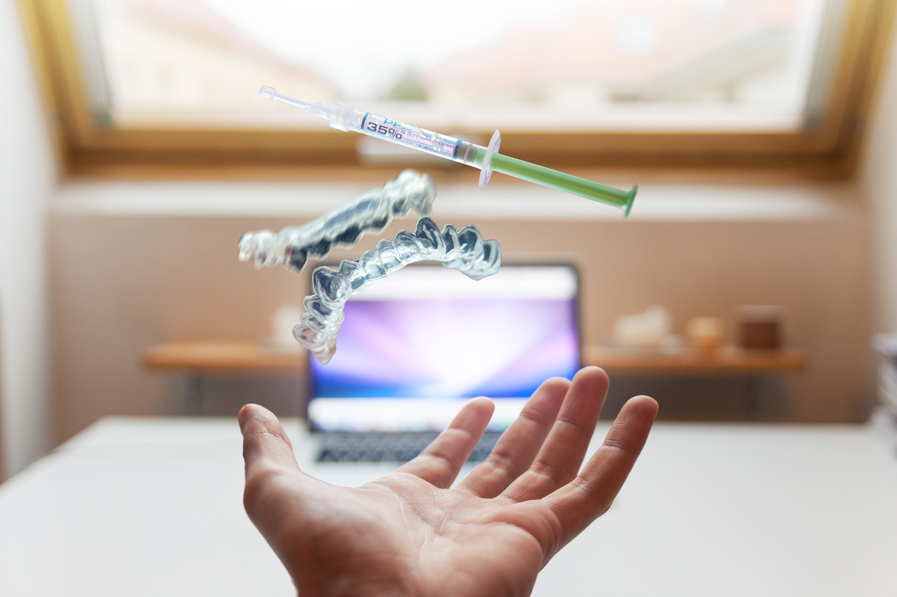
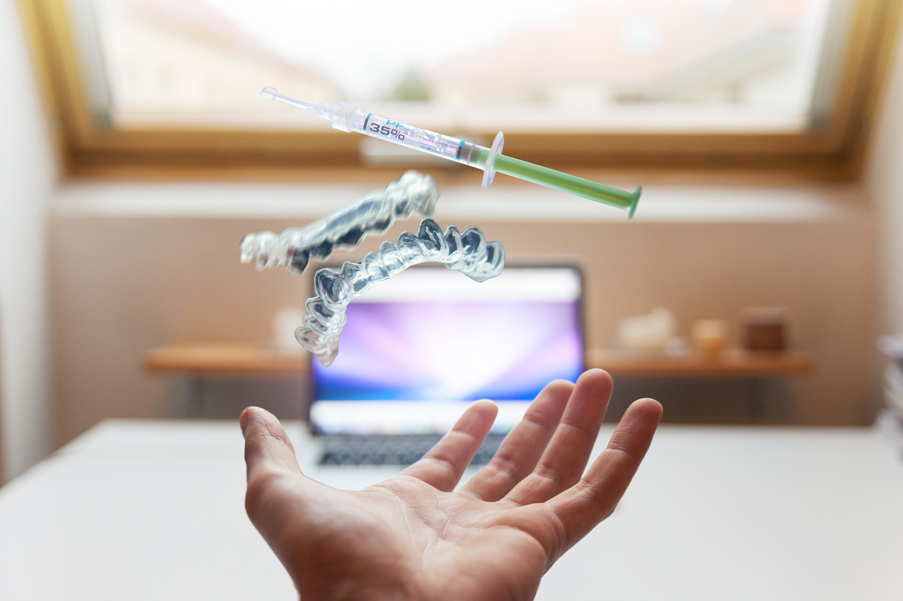

Confira agora alguns dos procedimentos realizados na clinica
Branqueamento
O branqueamento dentário é um tratamento estético que deixa os dentes brancos, mas não é recomendado para todo mundo. O clareamento dental sempre foi sinal de saúde e status. No Egito Antigo, segundo trabalhos acadêmicos e livros, as pessoas usavam cremes feitos de pedra-pomes e vinagre para clarear os dentes. Já no Império Romano, os moradores recorriam à urina para deixar os dentes mais brancos – a amônia presente no líquido expelido pelo corpo tem grande capacidade de limpeza. De lá para cá muita coisa mudou. As substâncias inusitadas usadas para branquear os dentes foram substituídas por compostos mais eficientes. No final da década de 1980, a primeira técnica para clareamento dental caseiro foi relatada na literatura odontológica. O produto citado pelos pesquisadores na época, chamado de peróxido de carbamida, é o mesmo utilizado nos tratamentos feitos nos dias de hoje.